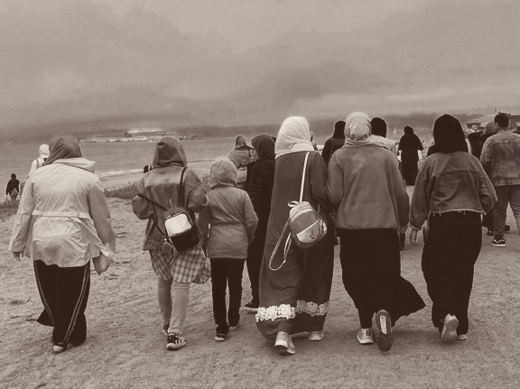

ArabCommunityServices
اتــــــــصل بنا (415) 861-7444Services
Immigration.
Social services.
Know your rights.
We offer free, confidential legal
and social services in English and Arabic.
Immigration
Get legal help with family petitions, asylum, and representation if you or a family member is detained by ICE or has a court date.
Social services
Apply for public benefits such as food stamps (CalFresh), health insurance (Medi-Cal), and cash assistance (CalWORKs).
Know your rights
Learn what to do if immigration agents come to your home, work, or community. Free trainings for families, businesses, and community groups.
Eligibility
Is this for you?
We serve working-class Arab, Muslim, North
African, and Southwest Asian residents of the Bay.
Requirements
- You or someone in your household is
a resident of the Greater SF Bay Area. - Your household income falls within
the low-to-moderate income range. - You or someone in your household is
Arab, Muslim, North African, or
Southwest Asian.
Not sure? Call anyway. If we can’t
help, we’ll connect you with
someone who can.
Process
What to expect
A three-step intake.
How it works
- Call us at (415) 861-7444.
- We’ll follow up to schedule a
consultation and assess whether
we’re the right team for your case. - If we take on your case, we’ll gather
your documents and get to work. If
we can’t take on your case, we’ll
refer you to trusted organizations
and attorneys.
Privacy
What you share with us about your
case stays strictly confidential. We
never share your case information
with immigration authorities or
anyone else.
About
Who we are
Lawyers and advocates reuniting families and
defending people held by ICE since 2007.
Mission
Arab Community Services (ACS) protects Arabs and Muslims through free immigration representation, social services, and know-your-rights training.
Team
We are an experienced and compassionate team, providing services in Arabic, English, and Dari. Our staff includes two immigration attorneys, one DOJ-accredited representative, three legal assistants, and one social services coordinator.
History
Founded in 2007 during a crackdown on immigrants, we provided legal, educational, and community services to hundreds of clients each year as Arab American Legal Services, a program of the Arab Resource and Organizing Center (AROC). We are part of the San Francisco Immigrant Legal & Education Network, a multiracial, multilingual coalition serving immigrants across the city. In 2026, we grew into our own organization.
AROC
Our sister organization, AROC, organizes working-class Arabs and Muslims in the Bay Area against racism, forced migration, and militarism.
Learn more >Work with us
If you speak Arabic and believe in immigrant rights, there is a place for you here. We welcome law students and volunteers. Email us to get involved.
info@arabcommunityservices.org
Donate
Fund free legal help
for our community.
Every service we offer is free. Your gift
makes that possible.
By mail
Please make checks payable to Center for Empowered Politics Education Fund, and mail to:
522 Valencia St.
San Francisco, CA 94110
ACS is a fiscally sponsored project of a 501(c)(3) nonprofit organization. Your gift may be tax-deductible. We will send you a receipt with the tax details.

خدماتنا مجانية وســـــــــــرية
وفريقنا يتحدث اللغة العربية